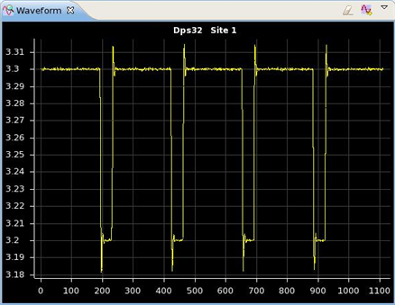
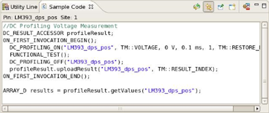
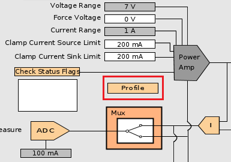
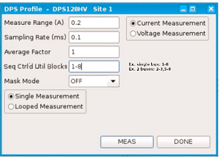

Profiling of DC Scale cards with Hardware view
Profiling (DC profiling) allows you to measure and display current and voltage waveforms during pattern execution. The tool is also known as DC Profiler and is available in the Hardware perspective.
About this task
Current and voltage profiling is supported for all DC Scale channels, both in DPS mode and in PMU mode; although the behavior of the card differs slightly:
- DPS128/64 and UHC4T:
On DC Scale DPS128/64 and UHC4T cards, profiling for multiport setups does not stop when the DPS part is finished. On these cards, profiling stops when the longest running port is finished. This gives the capability to profile the supply voltages/currents during the complete execution. In case you want to reduce memory consumption, you could put DPS pins into an empty port.
On these cards you can also do profiling when the pattern contains CLEV or CTIM commands. - DPS128:
For the DC Scale DPS128/DPS64 cards, changing the current measurement range for profiling is not supported. That is, the measureRange parameter of the DC_PROFILING_DEFINE and DC_PROFILING_ON APIs is ignored when the measureType parameter is set to TM::CURRENT. The profiling measurements are performed in the selected clamp current range.
- XPS256:For DC Scale XPS256 card, changing the voltage range or the current range during profiling is supported, and the currently active range is also taken into account for profiling. The measureRange parameter of the DC_PROFILING_DEFINE and DC_PROFILING_ON APIs is therefore not required for profiling and ignored, but still has to be set to a valid XPS256 range.
Before you begin
- Change to the Hardware perspective.
- In the Primary view of the Hardware perspective, select the primaries and the pattern.
- The DC Scale pin must be connected to the DUT.
Procedure
Results

The sequence also generates sample test method code for the executed measurement in the Sample Code view. You can directly copy and paste the code from the view into your test method program.

For details see also Sample Code view.
Example
Utility serial configuration for DC profiling
The following screen shot shows a part of the DPS128 Hardware view.

The Profile button at the bottom is marked in red and opens the DPS Profile dialog.

You can define the configuration of sequencer‑controlled utility lines, which is programmed to hardware before any pattern execution.
The UTSC firmware syntax is one of the following:
UTSC [1-8],[RW|RD][,MASK]UTSC ([-,1-8),[RW|RD][,MASK]
For example:
UTSC 1,RW; UTSC (2,3),RW,MASK; UTSC (5-8),RD
After the pattern finishes, SmarTest applies: UTSC ALL,OFF.
Multiple serial buses are supported. Each bus can range from 1 single utility block to up to 8 consecutive blocks.
For example:
- Single bus: 1-8. (Block 1 is master. Blocks 2-8 are slaves)
- Two buses: 2-3,5-7 (Blocks 2 and 5 are masters. Others are slaves)
If the Seq Ctrl'd Util Blocks field is empty, no sequencer control is enabled during profiling.
The content of the Seq Ctrl'd Util Blocks field is not stored/restored after closing the dialog.
Functional changes
- Introduced in SmarTest 7.2.0